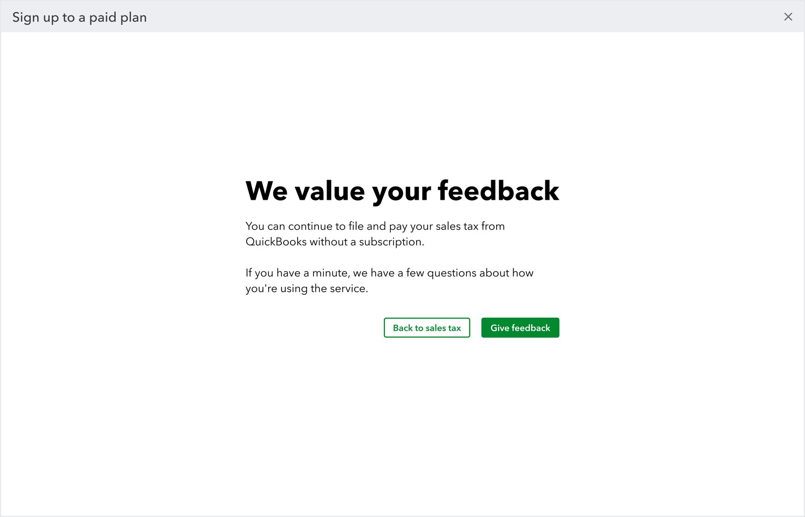

Senior Content Designer
Clear, user-centred content for complex products and services.
My experience spans content design, technical writing, content writing and content strategy, most recently on QuickBooks tax products at Intuit.
Highlights
100K+
Led content design for Intuit QuickBooks Sales Tax's agentic AI experience, scaling it to 100K+ customers within 3 months, with 83% engagement and 76% AI explanation helpfulness.
3% → 7%
Drove subscription conversion from 3% to 7% by identifying and designing in-product opportunities that connected user needs with commercial goals.
1 → 17
Scaled a complex, regulated Sales Tax e-filing experience from 1 to 17 US states, leading content across evolving user journeys and product requirements.
Content audit
Uncovered 30+ opportunities to improve the E2E Sales Tax experience, leading a content audit across product journeys and associated support content, then designing the improvements released to users.
AI conference
Founded and grew an international socially-responsible AI conference, delivering 3 summits in 3 years and securing £10,000+ in sponsorship and funding from Microsoft UK, Spotify, and UKRI.
Influence
Influenced critical product and brand decisions through user insight, challenging terminology that conflicted with users' mental models and shaping a clearer, more trustworthy tax experience.
Case studies
Intuit QuickBooks · US Business Tax – Self-employed Payments
Ensuring users didn't lose confidence in our new business tax product
Product renamed, based on my research
Read case study →
Intuit QuickBooks · US Sales Tax – Pricing Test
Gauging interest in a new product without damaging user trust
300 beta users in a dry test
Read case study →
Intuit QuickBooks · US Sales Tax – E2E Content Audit
Leading an end-to-end content audit across marketing, product, and support pages
30+ improvement opportunities uncovered
Read case study →
What it's like to work with me
“Dawn is one of those rare people who leaves a team genuinely better than she found it. Most people pick a path; she kept pushing herself into the harder, less comfortable one. She is rigorous, curious, customer-obsessed, and someone I’d work with again without hesitation.”
“Dawn architects holistic, user-centric solutions. She excelled in her product triad, partnering seamlessly with PMs and engineers to think through complex problems end-to-end. She was also a fearless early adopter of our AI initiatives. She directly collaborated with developers to shape the prompt engineering for our Sales Tax agent.”
“Dawn is curious in the other parts of the design discipline, and because she’s always learning new tricks, this curiosity turns into artifacts that have helped our team move faster: reference docs, language guidelines, synthesized research, shared frameworks, Claude skills; a foundation that others can build on.”
“Dawn is the rare collaborator who genuinely bridges disciplines. She has an instinct for the word that feels right, the conviction to defend it when jargon creeps in, and the ability to make that case persuasively to stakeholders at every level.”
“In the years we worked together Dawn was a thoughtful, curious, and generous collaborator. She was quick to pick up new tools to scale herself. I admire that Dawn always digs into the ‘why’ behind a guideline, rather than just applying it. Dawn is an excellent designer and systems thinker.”
“Dawn doesn’t just deliver strong copy, she brings the rationale with it, clearly articulating how each decision serves both user and business needs. Dawn is the type of person who is fully invested in the project’s success, brings her whole self to the work, and makes the team better for it.”
Read all my testimonials in full on my LinkedIn profile ↗
About
Senior Content Designer with a proven track record of creating clear, user-centred digital content for complex products and services. A thoughtful, curious collaborator who builds trusted relationships quickly and genuinely cares about understanding the people behind the problem.
Skills
Tools
Experience
Senior Content Designer
Feb 2022 – Jul 2026
Intuit UK. Global financial technology company behind QuickBooks, TurboTax, Credit Karma and Mailchimp.
- Owned content design across complex, regulated QuickBooks Sales Tax and Business Tax experiences, serving a potential 6M US customers across evolving product journeys.
- Shaped product direction from discovery through delivery, bringing content design into early problem definition, concept development, prototyping and user-facing experiences.
- Championed accessible, inclusive content, applying WCAG standards to product decisions and achieving Intuit Accessibility Champion Level 2.
- Participated in and led user research to uncover user needs, applying qualitative and quantitative insights to content decisions, identifying pain points, validating approaches and strengthening comprehension and user trust.
- Translated complex tax and accounting concepts into clear, actionable experiences, balancing user comprehension, business goals, regulatory requirements and product constraints.
- Directed content strategy across multidisciplinary product teams, partnering with Product, Design, Engineering, Research, Legal and Marketing to clarify problems, challenge assumptions and drive decisions.
- Defined and applied reusable content patterns and design-system guidance, improving consistency across journeys while helping teams solve recurring UX content problems at scale.
- Built trusted relationships across a global organisation, establishing content design as an influential product partner and subject-matter authority while collaborating closely with 8 interaction designers.
- Founded and grew an international socially-responsible AI conference, delivering 3 summits in 3 years and securing sponsorship and funding from Microsoft UK, Spotify, and UKRI.
- Developed content strategy across complex subject areas and multiple sectors. Commissioned 50+ speakers for three international summits, guiding their talks for audience fit.
- Planned, commissioned, created, and edited content across formats and audiences, including web content, articles, newsletters, social media, podcast editorial and digital delegate materials, turning specialist ideas into clear, audience-centred content.
- Crafted compelling propositions that attracted Microsoft UK, Spotify, and UKRI (ESRC) as partners. Delivered three summits on time and to budget.
- Set and tracked success measures (KPIs) for content and events, including website traffic, audience reach and delegate numbers. Transformed expert podcast interviews on AI and anthropology into accessible articles, increasing website visitors by 15% within six months.
- Managed relationships with sponsors, speakers, delegates, suppliers, and volunteers. Balanced their competing needs to deliver business value for sponsors and a strong experience for delegates.
For more work experience, see my LinkedIn profile ↗
Education
MA (Hons) in Social Anthropology 2:1
BA (Hons) in Anthropology First Class
Professional Development
Co-Chair, Intuit UK Women's Network
Fundamentals of UX Writing
Practical AI for UX Professionals
Accessible Content Design Upcoming
Languages
- EnglishNative
- GermanIntermediate fluency
- Spanish & ItalianBasic